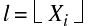
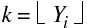

The INTERPOLATE function returns an array of linear, bilinear or trilinear interpolates, depending on the dimensions of the input array P .
Interpolates outside the bounds of P can be set to a user-specified value by using the MISSING keyword.
Result = INTERPOLATE( P , X [, Y [, Z ]] [, CUBIC = value {-1 to 0}] [, / GRID ] [, MISSING = value ] )
Linear interpolates are returned in the one-dimensional case, bilinear in the two-dimensional case and trilinear interpolates in the three-dimensional case. The returned array has the same type as P and its dimensions depend on those of the location parameters X , Y , and Z , as explained below.
The array of data values. P can be an array of any dimension. Interpolation occurs in the M rightmost indices of P , where M is the number of interpolation arrays. For example, if P has dimensions N i x N j , and only X is supplied (with N x elements), the result has dimensions N i x N x . This allows you to do a linear interpolation for each column of an array, without having to manually loop over all of the columns.
Arrays of numeric type containing the locations for which interpolates are desired. For linear interpolation ( P is a vector), the result has the same dimensions as X . The i -th element of the result is P interpolated at location X i . The Y and Z parameters should be omitted.
For bilinear interpolation Z should not be present.
Note: Location points outside the bounds of the array P —that is, elements of the X , Y , or Z arguments that are either less than zero or greater than the largest subscript in the corresponding dimension of P — are interpolated to the closest value within the bounds of the array P .
If the keyword GRID is not set, all location arrays must have the same number of elements. See the description of the GRID keyword below for more details on how interpolates are computed from P and these arrays.
Set this keyword to a value between -1 and 0 to use the cubic convolution interpolation method with the specified value as the interpolation parameter. Setting this keyword equal to a value greater than zero specifies a value of -1 for the interpolation parameter. Park and Schowengerdt (see reference below) suggest that a value of -0.5 significantly improves the reconstruction properties of this algorithm.
Cubic convolution is an interpolation method that closely approximates the theoretically optimum sinc interpolation function using cubic polynomials. According to sampling theory, details of which are beyond the scope of this document, if the original signal, f , is a band-limited signal, with no frequency component larger than ω 0 , and f is sampled with spacing less than or equal to 1/(2ω 0 ), then f can be reconstructed by convolving with a sinc function: sinc( x ) = sin(π x ) / (π x ).
The number of neighboring points used varies according to the dimension:
Note: Cubic convolution interpolation is significantly slower than bilinear interpolation. Also note that cubic interpolation is not supported for three-dimensional data.
For further details see:
Rifman, S.S. and McKinnon, D.M., “Evaluation of Digital Correction Techniques for ERTS Images; Final Report”, Report 20634-6003-TU-00, TRW Systems, Redondo Beach, CA, July 1974.
S. Park and R. Schowengerdt, 1983 “Image Reconstruction by Parametric Cubic Convolution”, Computer Vision, Graphics & Image Processing 23, 256.
The GRID keyword controls how the location arrays specify where interpolates are desired. This keyword has no effect in the case of linear interpolation.
If GRID is not set: The location arrays X , Y , and (if present) Z , must have the same number of elements. The returned array has the same type as P , and its dimensions depend on those of the location parameters X , Y , and Z , as previously explained for the P argument.
In the case of bilinear interpolation, the result is obtained as follows: Let  and  .
Element i of the result is computed by interpolating between P ( l, k ), P ( l +1, k ), P ( l , k +1), and P ( l +1, k +1). to obtain the estimated value at ( Xi , Yi ). Trilinear interpolation is a direct extension of the above.
If GRID is set: Let N x be the number of elements in X , let N y be the number of elements in Y , and N z be the number of elements in Z . The result has dimensions ( N x , N y ) for bilinear interpolation, and ( N x , N y , N z ) for trilinear interpolation. For bilinear interpolation, element ( i , j ) of the result contains the value of P interpolated at position ( Xi , Yi ). For trilinear interpolation, element ( i , j , k ) of the result is P interpolated at ( Xi , Yi , Zi ).
The value to return for elements outside the bounds of P. For one-dimensional input, the bounds of P are 0 to n , where n is the number of elements in P . For higher-dimensional input, the bounds of P are 0 to n -1 where n is the largest subscript of the corresponding dimension of P .
Note: If MISSING value is set to a complex number, IDL uses only the real part.
This routine is written to make use of IDL’s thread pool , which can increase execution speed on systems with multiple CPUs. The values stored in the !CPU system variable control whether IDL uses the thread pool for a given computation. In addition, you can use the thread pool keywords TPOOL_MAX_ELTS, TPOOL_MIN_ELTS, and TPOOL_NOTHREAD to override the defaults established by !CPU for a single invocation of this routine. See Thread Pool Keywords for details.
The example below computes bilinear interpolates with the keyword GRID set:
p = FINDGEN(4,4)
PRINT, INTERPOLATE(p, [.5, 1.5, 2.5], [.5, 1.5, 2.5], /GRID)
and prints the 3 by 3 array:
2.50000 3.50000 4.50000
6.50000 7.50000 8.50000
10.5000 11.5000 12.5000
corresponding to the locations:
(.5,.5), (1.5, .5), (2.5, .5),
(.5,1.5), (1.5, 1.5), (2.5, 1.5),
(.5,2.5), (1.5, 2.5), (2.5, 2.5)
Another example computes interpolates, with GRID not set and a parameter outside the bounds of P :
PRINT, INTERPOLATE(p, [.5, 1.5, 2.5, 3.1], [.5, 1.5, 2.5, 2])
and prints the result:
2.50000 7.50000 12.5000 11.0000
corresponding to the locations (.5,.5), (1.5, 1.5), (2.5, 2.5) and (3.1, 2.0). Note that the last location is outside the bounds of P and is set from the value of the last column. The following command uses the MISSING keyword to set such values to -1:
PRINT, INTERPOLATE(p, [.5, 1.5, 2.5, 3.1], [.5, 1.5, 2.5, 2], $
MISSING = -1)
and gives the result:
2.50000 7.50000 12.5000 -1.00000
|
Pre 4.0 |
Introduced |